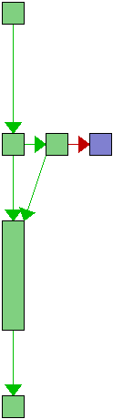

source src/trace.c
| Line | Flow | Count | Block(s) | Source |
|---|---|---|---|---|
| 1 | - | /* | ||
| 2 | - | * Copyright (C) the libgit2 contributors. All rights reserved. | ||
| 3 | - | * | ||
| 4 | - | * This file is part of libgit2, distributed under the GNU GPL v2 with | ||
| 5 | - | * a Linking Exception. For full terms see the included COPYING file. | ||
| 6 | - | */ | ||
| 7 | - | |||
| 8 | - | #include "trace.h" | ||
| 9 | - | |||
| 10 | - | #include "buffer.h" | ||
| 11 | - | #include "global.h" | ||
| 12 | - | #include "git2/trace.h" | ||
| 13 | - | |||
| 14 | - | #ifdef GIT_TRACE | ||
| 15 | - | |||
| 16 | - | struct git_trace_data git_trace__data = {0}; | ||
| 17 | - | |||
| 18 | - | #endif | ||
| 19 | - | |||
| 20 |  | 28 | 2 | int git_trace_set(git_trace_level_t level, git_trace_cb callback) |
| 21 | - | { | ||
| 22 | - | #ifdef GIT_TRACE | ||
| 23 | 28 | 2-4 | assert(level == 0 || callback != NULL); | |
| 24 | - | |||
| 25 | 28 | 5 | git_trace__data.level = level; | |
| 26 | 28 | 5 | git_trace__data.callback = callback; | |
| 27 | 28 | 5 | GIT_MEMORY_BARRIER; | |
| 28 | - | |||
| 29 | 28 | 5 | return 0; | |
| 30 | - | #else | ||
| 31 | - | GIT_UNUSED(level); | ||
| 32 | - | GIT_UNUSED(callback); | ||
| 33 | - | |||
| 34 | - | git_error_set(GIT_ERROR_INVALID, | ||
| 35 | - | "this version of libgit2 was not built with tracing."); | ||
| 36 | - | return -1; | ||
| 37 | - | #endif | ||
| 38 | - | } |